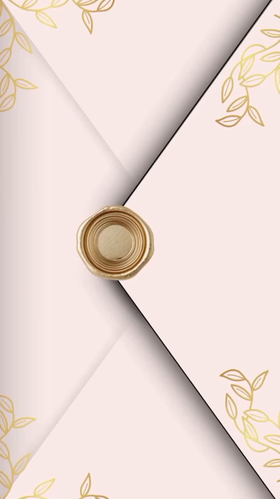

1

01. Apertura del Sobre
00:00 - 00:02 (2 seg)Descripción: Sobre de correspondencia en tono rosa pálido/nude cerrado con solapas cruzadas. En el centro descansa un sello de lacre dorado circular con textura de cera fundida, acompañado de ramitas de hojas doradas estampadas en las esquinas.
| Animación: | Apertura vertical de la solapa superior e inferior, simulando destapar la tarjeta. |
| Música: | Entrada suave y melódica de piano e intro vocal "Prometo...". |
| Equivalente Web: | Animación interactiva de sobre donde el invitado hace clic en el lacre para abrir la invitación. |